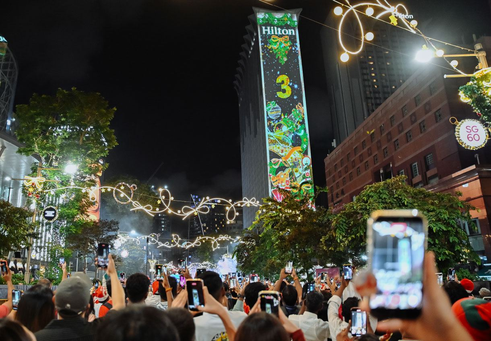

Festivals · Culture
Christmas on A Great Street 2026 (Orchard Road)
- Dates
- –
- Venue
- Orchard Road
- Location
- Singapore, Singapore
- Format
- In-person
- Category
- Culture
- Industry
- Culture
- Organiser
- Orchard Road Business Association
- Official website
- https://christmas.orchardroad.org/
About
Running now (started 17 Nov 2026). Dates are local Singapore dates (SGT, UTC+8).
Topics: Christmas light-up, street festival, carnival.
No organiser attendance figure found on official pages (24 Nov 2026). Ranked by an estimated size tier 'large' (our judgement from format, venue and scale, not an official number).